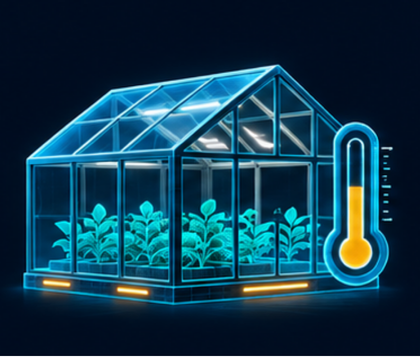

نحافظ على النباتات
الدفيئة نفسها، لكنّ الظروف ليست متشابهة
مدة القراءة المتوقعة: نحو 5 دقائق

تغيّر شيء ما في الدفيئة
في كل صباح تفتح ميخال دفيئة المدرسة. وهي تزرع مع التلاميذ الخسّ والأعشاب العطرية والشتلات الصغيرة. يسقي التلاميذ النباتات ويفحصون أوراقها ويسجّلون ما تغيّر منذ زيارتهم السابقة.
لاحظت ميخال في الآونة الأخيرة أمرًا غريبًا. ففي بعض أحواض الزراعة تبدو الأوراق خضراء ونضرة، وفي أحواض أخرى تبدو الأوراق ذابلة وقت الظهيرة.
تنمو النباتات في الدفيئة نفسها وتُسقى في الأيام نفسها. فلماذا لا تبدو جميعها متشابهة؟
الصباح لا يروي حكاية اليوم كلّه
يوجد مقياس حرارة معلّق قرب باب الدفيئة. تنظر إليه ميخال كل صباح قبل بدء الدروس. في ذلك الوقت يكون الهواء داخل الدفيئة لطيفًا عادةً وتبدو النباتات بحالة جيّدة.
لكنّ ميخال لا تبقى في الدفيئة طوال اليوم. فبعد الفحص تعود إلى عملها في المدرسة، ولا يعود التلاميذ إلا في الاستراحة أو في الحصّة التالية.
في أحد الأيام تصل مجموعة من التلاميذ إلى الدفيئة وقت الظهيرة. يشعرون بأنّ الجوّ في الداخل أحرّ مما كان عليه صباحًا. وفي ذلك الوقت تحديدًا تبدو أوراق النباتات في الحوض البعيد عن الباب أضعف.
عندما يعودون بعد الظهر تبدو بعض الأوراق مختلفة من جديد.
مكان واحد وفروق عديدة
يرسم التلاميذ خريطة بسيطة للدفيئة. في أحد الجانبين توجد نافذة للتهوية، وفي الجانب الآخر جدار شفّاف تسطع عليه الشمس ساعات طويلة.
قرب الباب يشعرون أحيانًا بنسمة خفيفة عندما يدخل الناس ويخرجون. أمّا عند حوض الزراعة البعيد فلا تكاد توجد حركة للهواء.
يبقى مقياس الحرارة في المكان نفسه دائمًا. وهو يخبرنا بدرجة الحرارة قرب الباب، لكن لم يفحص أحد بعد إن كانت الدرجة نفسها قرب الحوض البعيد.
حتى التربة لا تبدو متشابهة في كل مكان. ففي حوض تبقى رطبة مدّة أطول وفي حوض آخر تجفّ بسرعة.
نبدأ بجمع الملاحظات
تطلب ميخال من التلاميذ مراقبة النباتات عدّة أيام. يسجّلون ساعة الزيارة وحوض الزراعة الذي فحصوه وشكل الأوراق.
تلاحظ إحدى المجموعات أنّ الأوراق تذبل خصوصًا وقت الظهيرة. وتشير مجموعة أخرى إلى أنّ النباتات القريبة من النافذة تبدو أفضل حالًا.
هذه تفاصيل مهمّة، لكنّ السبب الدقيق للاختلاف لم يتّضح بعد. قد يكون للأمر علاقة بالحرارة أو بكمّية المياه أو بحركة الهواء أو بعدّة ظروف معًا.
ولكي يقارنوا بين الأحواض، عليهم أن يتذكّروا أيضًا أنّ النباتات ليست كلّها من النوع نفسه.
من الصعب التواجد في أماكن عديدة معًا
تريد ميخال الاستمرار في رعاية الدفيئة، لكنها لا تستطيع ترك عملها لتفحص كل حوض في كل ساعة.
والتلاميذ أيضًا لا يستطيعون البقاء هناك طوال اليوم. أحيانًا يحدث التغيّر بينما يكون الجميع داخل الصفوف.
يوم الجمعة تُغلق الدفيئة بعد عودة التلاميذ إلى بيوتهم. وحتى يوم الأحد لا يسجّل أحد ما يحدث في داخلها.
ما الذي لم نعرفه بعد؟
تحتوي السجلّات على أوصاف للأوراق، لكن لا توجد قياسات من جميع أجزاء الدفيئة في الأوقات نفسها. ولا يعرفون بعد متى يبدأ التغيّر وكم يستمرّ.
تراجع ميخال والتلاميذ الخريطة وما كتبوه. ما المعلومات التي ستساعدهم على التمييز بين الأسباب المحتملة؟ وما الذي يجدر بهم فحصه قبل تغيير طريقة العناية بالنباتات؟
تلميح من عالم الفضاء
في تجارب زراعة النباتات في الفضاء، يتابع العلماء ظروفًا مثل الضوء ودرجة الحرارة وكمّية المياه. ويمكن لأجهزة القياس أن توفّر معلومات حتى عندما لا يقف أحد قرب النبات.
القياس في مكان واحد وفي وقت واحد لا يروي القصّة كلّها دائمًا. فكّروا في قدرة من عالم الفضاء قد تساعد ميخال على فهم ما يحدث داخل الدفيئة.